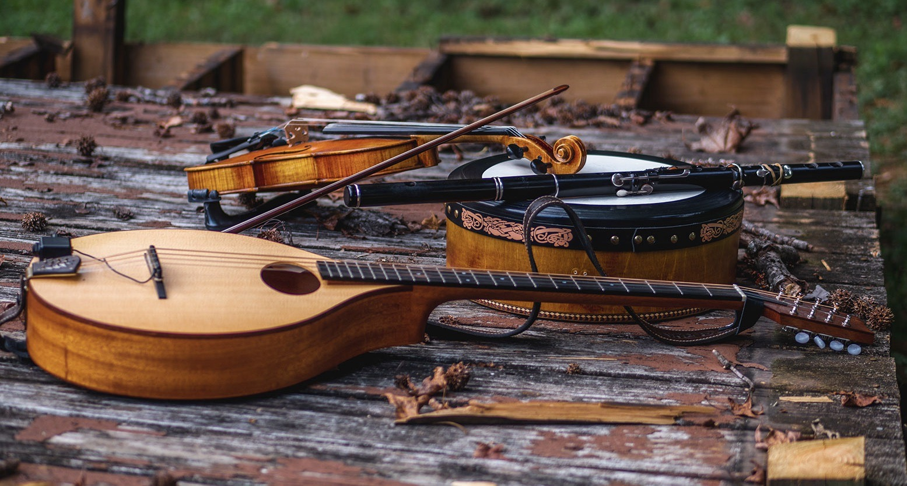

Chords
-
30-Års Jiggen
: Jig, G
-
Adje Jano: Dm, 7/8
-
Adventspolksa
: Polska, G
-
Angeline the Baker: Reel, D
-
Antin Mikko: Polska, A
-
Arthur Darley's: Jig, D
-
Ashokan Farewell: Waltz, D
-
The Ballydesmond (#1): Polka, Am dor
-
The Ballydesmond (#2): Polka, Am dor
-
Baym Rebn In Palesteena: D
-
Biserka:
Polska, G
-
Björnlåten:
Polska, G
-
Britches Full Of Stitches: Polka, A
-
The Butterfly:
Slip Jig, Em
-
The Castle: Jig,
Am
-
Catharsis: Reel, Gm
-
Chinquapin Hunting: Reel, A
-
Le Clochard de Paris: Waltz, Dm
-
Copșa Mică: Schottische, Dm
-
Crested Hens:
Waltz, Em
-
Cuckoo's Nest: Hornpipe, D
-
The Cup of Tea:
Reel, Em dor
-
La Danse du Barbier: Reel, G
-
Dans Loudieg: Am
-
Derrière Chez Nous: Bouree, Am
-
Drowsy Maggie:
Reel, Em dor
-
The Earl's Chair:
Reel, D
-
Elzic's Farewell:
Reel, Am
-
Father O'Flynn: Jig, D
-
Farewell to Whalley Range: Slip Jig, F#m dor
-
La Fee Des Dents: Jig, G
-
The Finnish:
Polka, Bm dor
-
Flatbush Waltz: Gm
-
The Foxhunter: Slip
Jig, D
-
Frank's: Reel, A
-
Da Full Rigged Ship: Jig, Am
-
Grastûno bal: 2/4, Dm
-
The Green Cake:
Reel, F#m dor
-
Grey Owl:
Reel, D
-
Hag At The Churn: Jig, D mix
-
Hardiman the Fiddler: Slip Jig, D mix
-
Hora de Kaval: Hora, D Hungarian minor
-
Humours Of Ballyloughlin: Jig, D mix
- Iníon Ní Scannláin: Waltz, D
-
Iiris valssi: Waltz, Em
-
Itzikel: Frailach, Em
-
Jag Ska Lärä Dig / Slängpolska: Polska, Dm
-
Josephins Dopvals:
Waltz, F
-
Jovano, Jovanke: D Freygish
-
Julia Delany's: Reel, Dm
-
Jump At The Sun: Jig, Gm
-
The Kalamatianos: G
-
The Kerry Polska: D
-
Khosid Wedding Dances (all)
-
Khosid Wedding Dance I: F
-
Khosid Wedding Dance II: Dm
-
Khosid Wedding Dance III: Dm
-
The Killavil:
Jig, Em
-
Kolomeike:
Dm, Hungarian minor
-
Limousin Mazurka: Mazurka, Em
-
The Little Beggarman: Hornpipe, A
- Little David Seats The Bride: 2/4, D Freygish
- Little Miss Ladybird Chords: Jig, D
-
Da Lounge Bar:
Jig, D
-
Macedonian Horo: Horo, A
-
MacArthur Road: Reel, E
-
Maison De Glace: Jig, D
-
Marche du quêteux Pomerleau: March, G
-
Merrily Kiss The Quaker: Slide, G
-
Metsäkukkia: Waltz, Em
-
Misirlou: D Freygish
-
Music For A Found Harmonium: Reel, D
-
The Musical Priest: Reel, Bm
-
Da New Rigged Ship: Reel or Hornpipe, A
-
Nigun Atik: E
Freygish
-
Old Hag You Have Killed Me: Jig, Dmix
-
L'Orientale
-
Over The Moor To Maggie: Reel, G
-
Over The Waterfall: Breakdown, D
-
Planxty Hewlett: Waltz, D
-
Polonäs de Sexdrega
: Polonäs, G
-
Push That Pig's Foot A Little Further In The Fire: Reel, G
-
Rakish Paddy:
Reel, D mix
-
Ratevka:
Horo, A Hijaz
-
Red Jacket:
Slip jig (polska?), A
-
The Road To Lisdoonvarna: Slide, Em dor
-
The Rolling Waves: Jig, D
-
Rosbif: Waltz,
Em
-
Roslyn Castle: Slow Air, Em
-
Sailor's Wife: Jig, Dm
-
Säkkijärven Polkka: Polka, Cm
-
Salt Spring: Reel, A
-
Seanamhac Tube Station: Reel, G dor
-
Shalom Aleichem: Am
-
Širto: D
-
Slängpolska efter Byss-Calle: Polska, G
-
A Slip Of A Thing: Slip jig, G
-
Da Slockit Light: March, D
-
Soggy's: Slip jig, A
-
Speil Klezmer: 2/4, Dm
-
Spootiskerry:
Reel, G
-
Sto Me E Milo:
A
-
The Swallowtail:
Jig, Em dor
-
Sweeny's:
Polka, A
-
Tolka Polka: Polka, Am
-
Tom Billy's: Jig, A mix
-
Trip To Herve's: Reel, D
-
Tripping Up The Stairs: Jig, D
-
Tsizikpolkka: Polka, Bm
-
Up Da Stroods: Reel, D
-
Vals Efter Lasse I Lyby: Waltz, Am
-
Whelan's: Jig, Em
-
The White Petticoat: Jig, Em